Rechnungslegung · Konten
Zeitraum, sechs Arbeitsschritte und Konten mit ihren Salden.
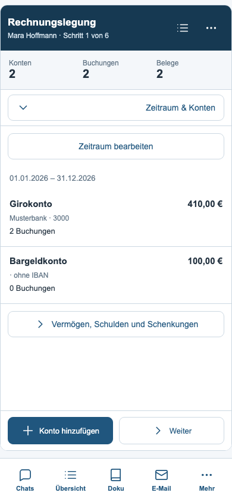
Kontobearbeitung
Kontoinhaber, Bankdaten, Anfangs- und Endbestand als geschützter Entwurf.
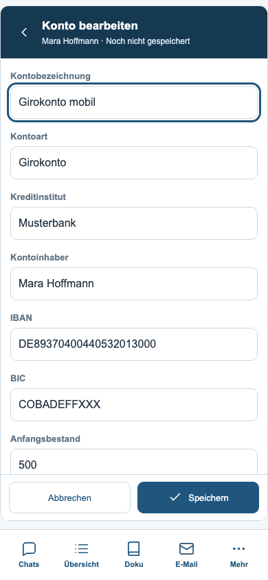
Vermögen, Schulden und Schenkungen
Die vollständigen vorhandenen Tabellen werden auf schmale Ansichten umgebrochen.
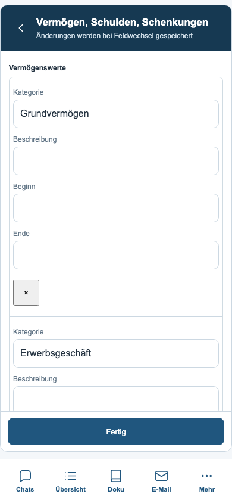
Bankdaten importieren
Quelldateien, Erkennungszustand, erneutes Einlesen und Banking-Übernahme.
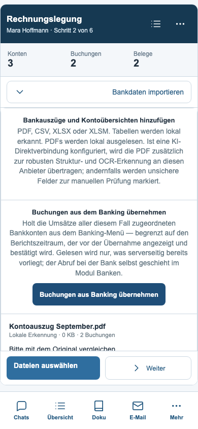
Banking-Vorschau
Zeitraum, Summen und Dublettenprüfung vor der bestätigten Übernahme.
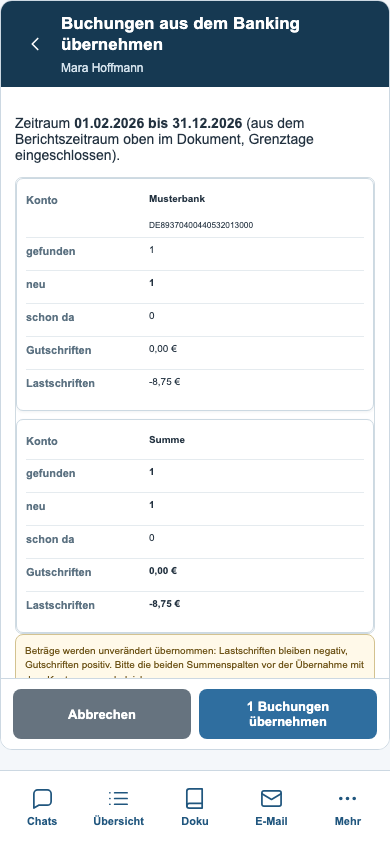
Buchungsliste
Suche, Filter und nachladbare Buchungen ohne die bisherige 500er-Anzeigegrenze.
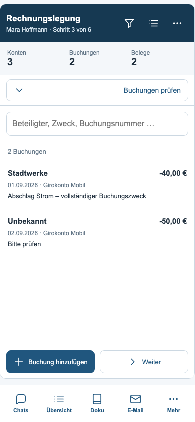
Buchungsfilter
Kontowahl sowie unsichere Buchungen und Buchungen ohne Beleg.
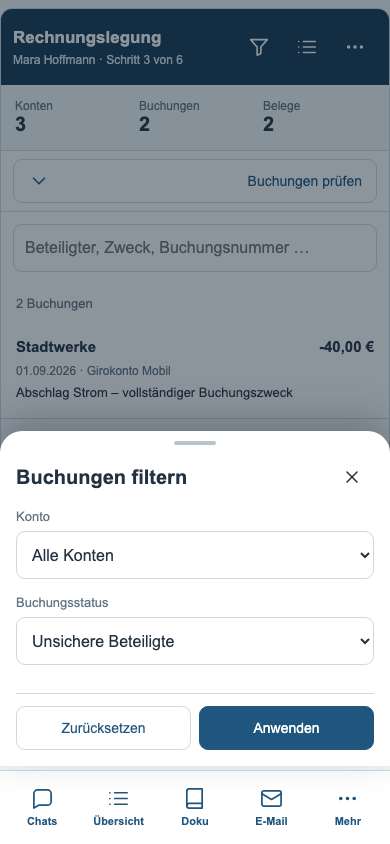
Buchungsdetails
Wertstellung, Betrag, Saldo, vollständiger Zweck, Quelle und zugeordnete Belege.
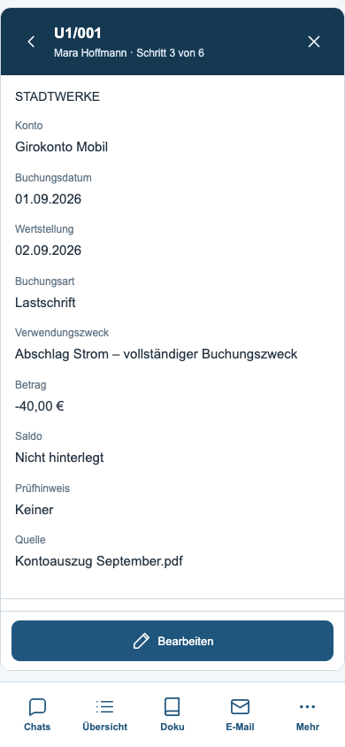
Rechnungen und Belege
Auswahl, Suche, Metadaten, Originaldatei und Erkennungsaktionen.
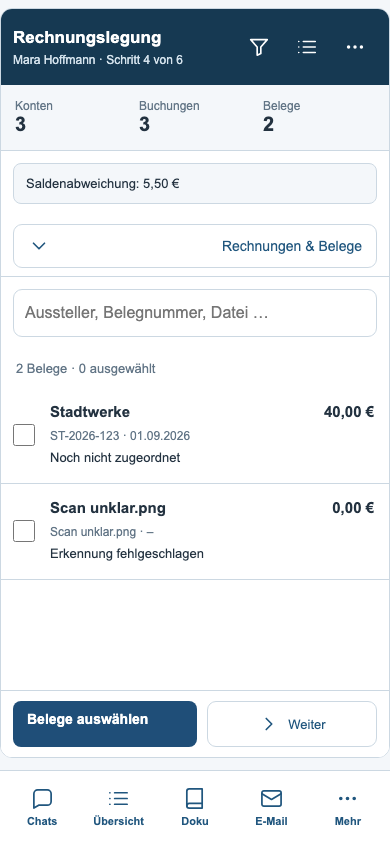
Belegzuordnung
Vorhandene Zuordnungslogik und Teilbeträge mit ausdrücklichem Speichern.
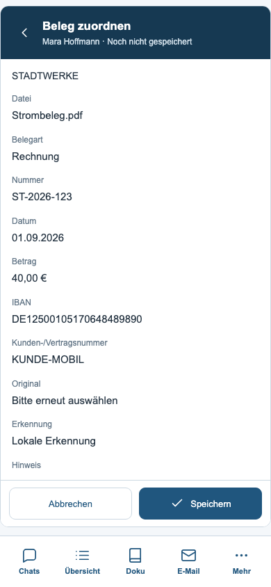
Prüfung und Ausgabe
Saldenabgleich, gebündelte Prüfhinweise und Erreichen der Ausgabe.
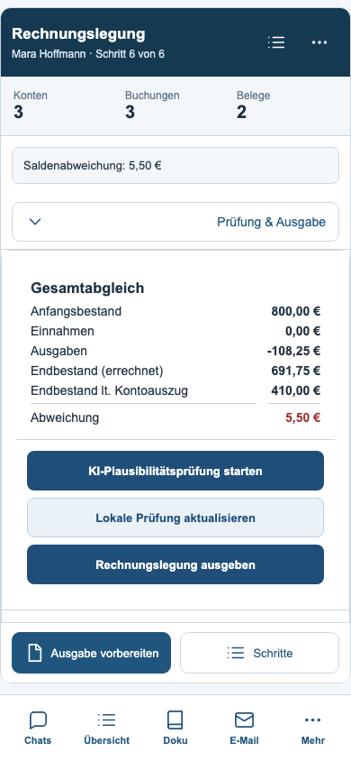
Exportdialog
Ausgabearten, Empfänger, Anlagen und Signaturen bleiben vollständig verfügbar.
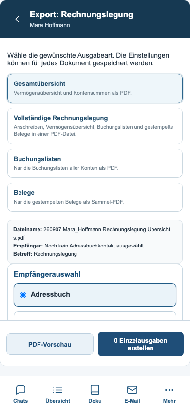
Rechnungslegung · Tastatur
Die Navigation blendet sich aus; Formularaktionen bleiben über der Tastatur.
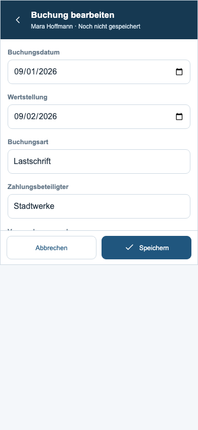
Rechnungslegung · Dunkelmodus
Dunkle Liste mit lesbaren Beträgen, Prüfhinsweisen und Aktionen.
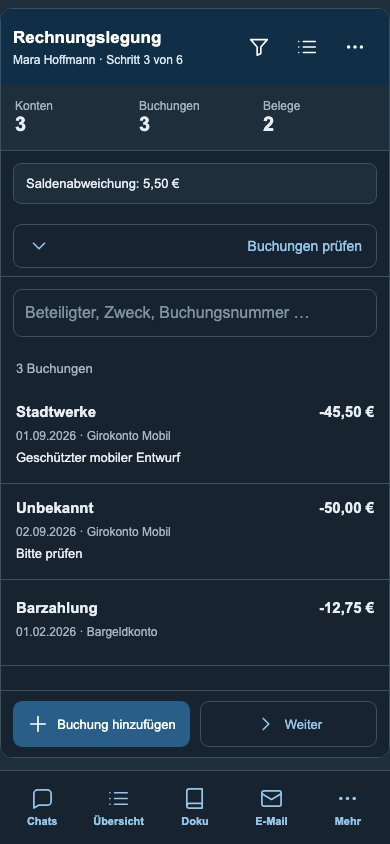
Handkasse · Kassenbuch
Gesamtbestand, Bewegung in Auswahl, Einnahmen und Ausgaben.
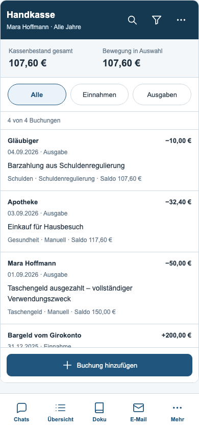
Handkassenfilter
Jahr, Buchungsart, Kategorie, Herkunft und Sortierung.
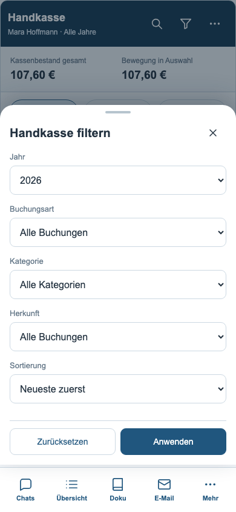
Kassenbuchung · Details
Vollständige Angaben, Saldo nach dieser Buchung und Wiederholung.
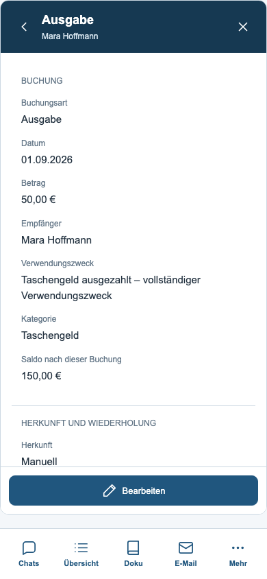
Kassenbuchung · Formular
Alle vorhandenen Felder; Speicherung und AutoDoku erfolgen nach Bestätigung.
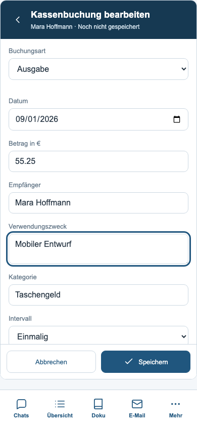
Gespiegelte Barzahlung
Herkunft aus der Schuldenregulierung und ursprünglicher Schreibschutz.
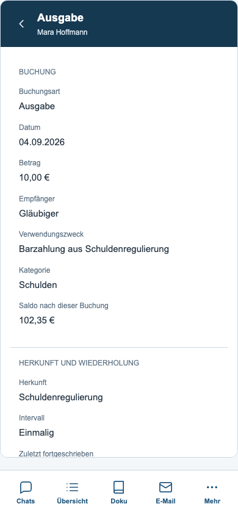
Handkassenaktionen
Vollständige Exporte und Übergabe an die Rechnungslegung.
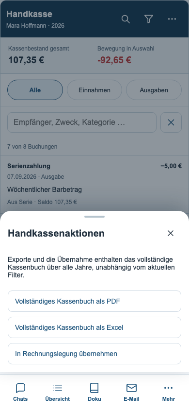
Handkasse · Tastatur
Eingabe und Speichern bleiben oberhalb der eingeblendeten Tastatur erreichbar.
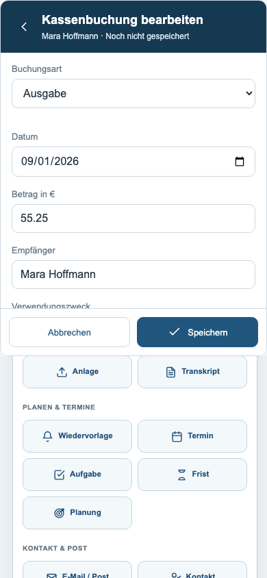
Handkasse · Dunkelmodus
Kassenbestand, Auswahl und Buchungen in der dunklen Darstellung.
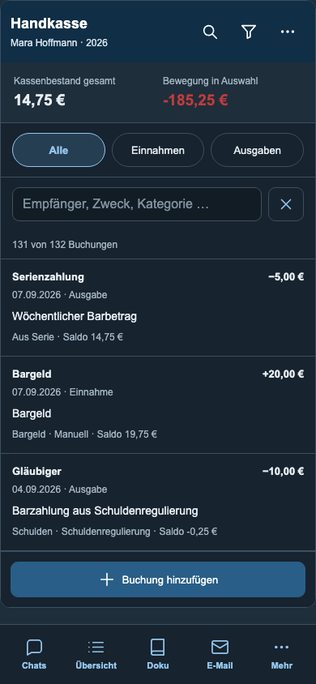